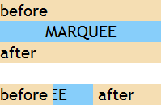

根据 CSS2.1 规范中的描述，如果一个浮动元素的 'width' 是 'auto'，并且它是一个非替换元素，那么它的宽度将会是shrink-to-fit。
shrink-to-fit的计算公式：min(max(preferred minimum width, available width), preferred width)
CSS2.1 并未给出 preferred minimum width、available width 和 preferred width 确切算法，通常，将内容中非明确的换行外的其他部分强制不换行来计算 preferred width；反之，尝试将内容尽可能的换行，以得到 preferred minimum width；available width 即该元素的包含块的宽度减去 'margin-left'，'border-left-width'，'padding-left'，'padding-right'，'border-right-width'，'margin-right' 的值以及任何存在的纵向滚动条的宽度。
关于浮动非替换元素宽度计算的详细资料，请参考 CSS2.1 规范 10.3.5 Floating, non-replaced elements 中的内容。
若容器中包含 MARQUEE 元素，且容器遵循 shrink-to-fit 宽度算法，则容器及 MARQUEE 元素的宽度在不同浏览器中存在差异。
此问题可能导致页面布局与不同浏览器不一致。
| 所有浏览器 |
|---|
MARQUEE 不属于 W3C 规范中的元素，它最初由 IE2.0 引入，目前它已成为事实标准，所有浏览器均支持 MARQUEE 元素。
首先观察 MARQUEE 元素的一个特有现象：marquee.html
<!DOCTYPE html> <html> <head> </head> <body style="font:20px 'Trebuchet
MS';"> <div style="width:200px; background:wheat;">
<span>before</span> <marquee style="background:lightskyblue;
vertical-align:bottom;">MARQUEE</marquee> <span>after</span> </div>
<br /> <div style="width:200px; background:wheat;">
<span>before</span> <marquee style="background:lightskyblue; width:50px;
vertical-align:bottom;">MARQUEE</marquee> <span>after</span> </div>
</body> </html>
上面代码中第一个 MARQUEE 元素没有设定宽度，则其 'width' 特性为初始值 'auto'；第二个 MARQUEE 元素设定了宽度 50px。
各浏览器中运行效果均相同：

MARQUEE 元素在未设定宽度时 (width:auto)，其表现得像块级元素，会占满其包含块，有点类似 width:100%。当为 MARQUEE 元素显式地设定一个宽度后，其表现得像行内元素。
此外，
bool RenderBox::sizesToIntrinsicWidth(WidthType
widthType) const。分析以下代码：marquee_stf.html
<!DOCTYPE html> <html> <head> <style> * { margin:0; padding:0; font:20px
'Trebuchet MS'; } </style> </head> <body> <body> <div
style="width:300px; background:gray; overflow:hidden;"> <div style="float:left;
background:wheat;"> <marquee style="background:lightskyblue;
vertical-align:bottom;">MARQUEE</marquee> </div> <br /><br /><br
/> <div style="float:left; background:wheat;"> <img
style="background:lightskyblue; width:100%;" src="google.gif" /> </div>
</div> </body> </html>
上面两组代码中，一组为 MARQUEE 元素，另一组为 IMG 元素。MARQUEE 元素没有设定宽度，IMG 元素设定了宽度 100%。这两个元素均位于一个遵照 shrink-to-fit 算法计算宽度的包含块内。
在各浏览器中效果如下：
| IE6 IE7 IE8(Q) | IE8(S) Chrome Safari Opera | Firefox |
|---|---|---|
首先解释 Firefox 中的差异：Firefox 中 MARQUEE 元素及其包含块 shrink-to-fit 计算宽度均为 IE8(S)、Chrome 中的 3 倍，这是由于 MARQUEE 元素在中使用 DIV 元素模拟。浏览器内部会在 MARQUEE 元素自身标记与其内容之间生成三层 DIV 元素，并通过 JavaScript 脚本控制 MARQUEE 元素的各种行为。而其中的一个生成的 DIV 元素设定了 margin: 0 [width]，脚本通过调整 scroll 值实现 MARQUEE 的滚动效果。所以实际上 MARQUEE 元素内部真正宽度为 margin-left:[width]、[width]、margin-right:[width]，这也是最终 shrink-to-fit 计算后的宽度出现了 3 倍的原因。
而在 IE6 IE7 IE8(Q) 中，MARQUEE 元素由于其特殊的宽度特性，以及其自身触发 hasLayout 特性，这导致其将 shrink-to-fit 的包含块撑大。
下面设定了 width:100% 的 IMG 元素同样反映出这个现象。此外，其他替换元素在设定了 width:100% 后，也有类似现象。
给 MARQUEE 元素及替换元素定义具体的宽度，保证各浏览器兼容。
| 操作系统版本: | Windows 7 Ultimate build 7600 |
|---|---|
| 浏览器版本: |
IE6
IE7 IE8 Firefox 3.6.11 Chrome 9.0.570.0 dev Safari 5.0.2 Opera 10.63 |
| 测试页面: |
marquee.html
marquee_stf.html |
| 本文更新时间: | 2010-11-05 |
shrink-to-fit marquee 替换元素